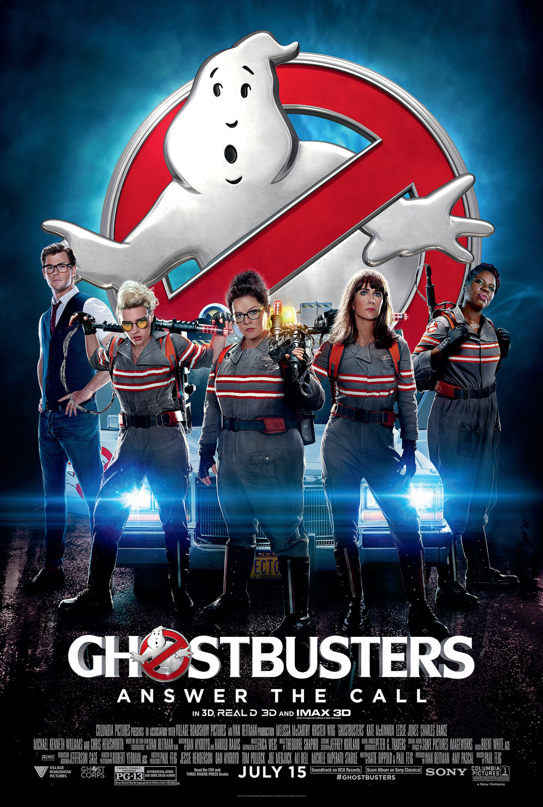

Quote 1
- Dr. Peter Venkman: "What I'd really like to do is talk to Dana. Dana? It's Peter."
- Dana Barrett: "There is no Dana, there is only Zuul."
- Dr. Peter Venkman: "Oh, Zuulie, you nut, now c'mon. Just relax, c'mon. I want to talk to Dana. Dana, Dana. "Can I talk to Dana?
- Dana Barrett: "in an inhuman demonic voice There is no Dana, only Zuul!"
- Dr. Peter Venkman:"What a lovely singing voice you must have."
Quote 2
- Dr. Peter Venkman: "This city is headed for a disaster of biblical proportions."
- Mayor: "What do you mean, 'biblical?'"
- Dr Ray Stantz: "What he means is Old Testament, Mr. Mayor, real wrath of God type stuff."
- Dr. Peter Venkman: "Exactly."
- Dr Ray Stantz:"Fire and brimstone coming down from the skies! Rivers and seas boiling!"
- Dr. Egon Spengler:"Forty years of darkness! Earthquakes, volcanoes..."
- Winston Zeddemore: "The dead rising from the grave!"
- Dr. Peter Venkman:"Human sacrifice, dogs and cats living together... mass hysteria!"
- Mayor:"All right, all right! I get the point!"
Quote 3
- [clearing away tables in the dining room to make room for the ghost trap]
- Dr Ray Stantz: I've gotta get this in the clear...!
- Dr. Peter Venkman:Wait, wait, wait! I've always wanted to do this...
- [He yanks a tablecloth off of a table, overturning and shattering everything except the centerpiece in the middle]
- Dr. Peter Venkman: [triumphantly] And the flowers are still standing!